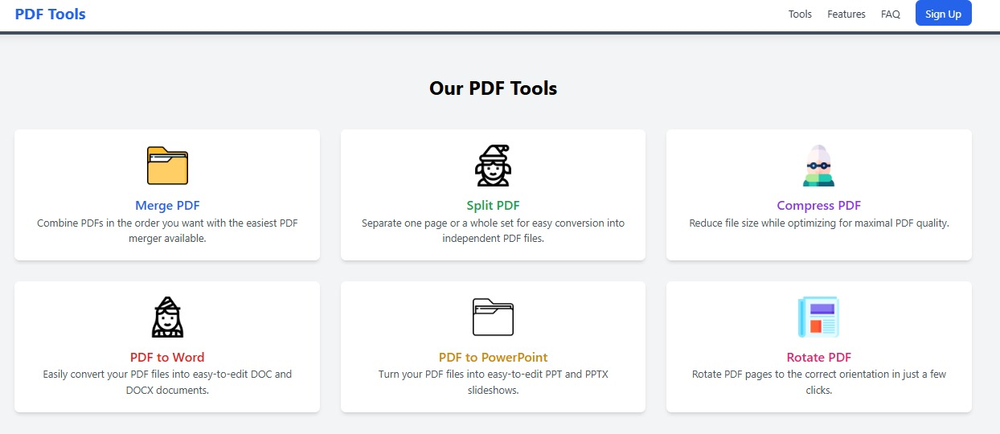
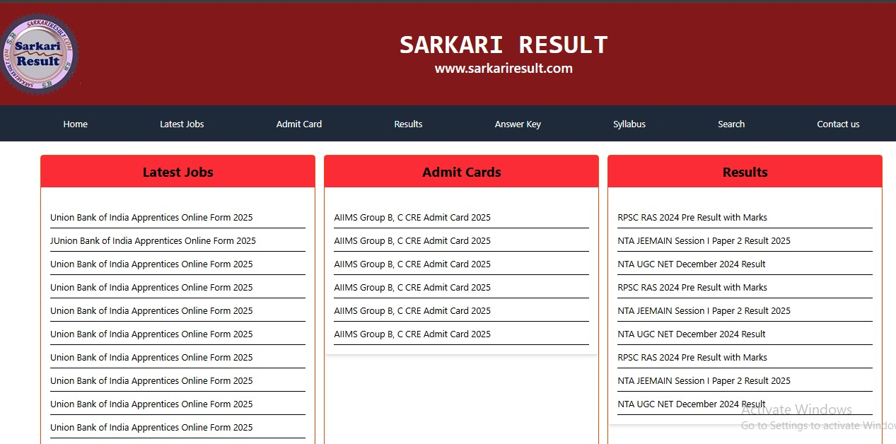
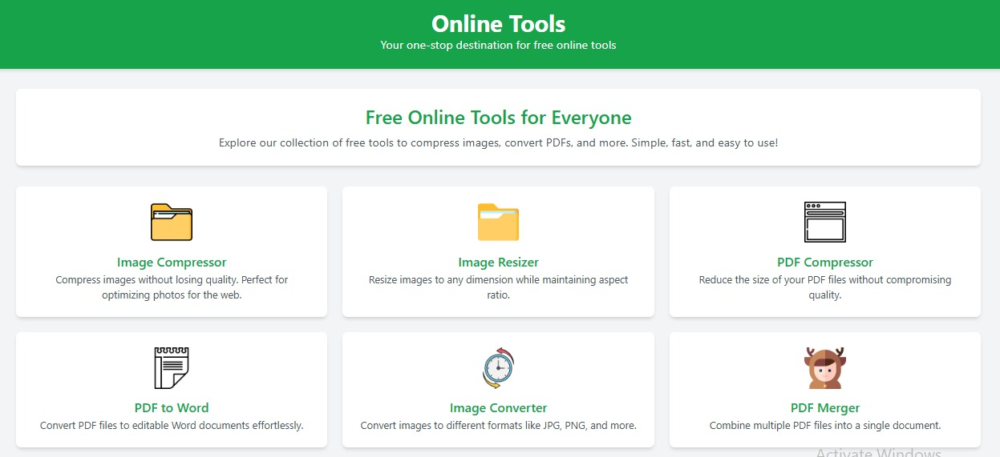
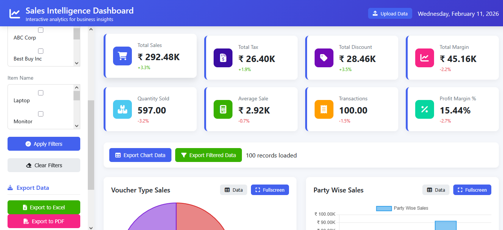
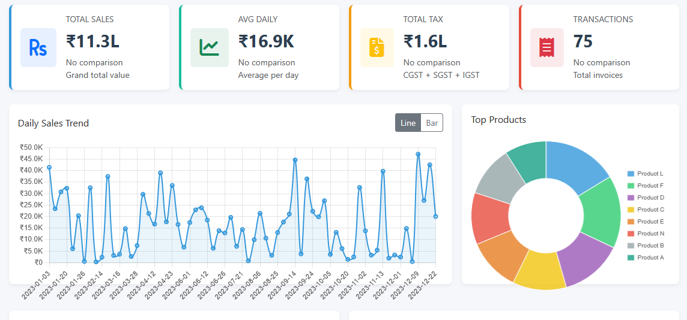
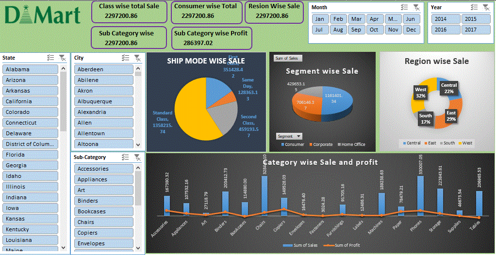
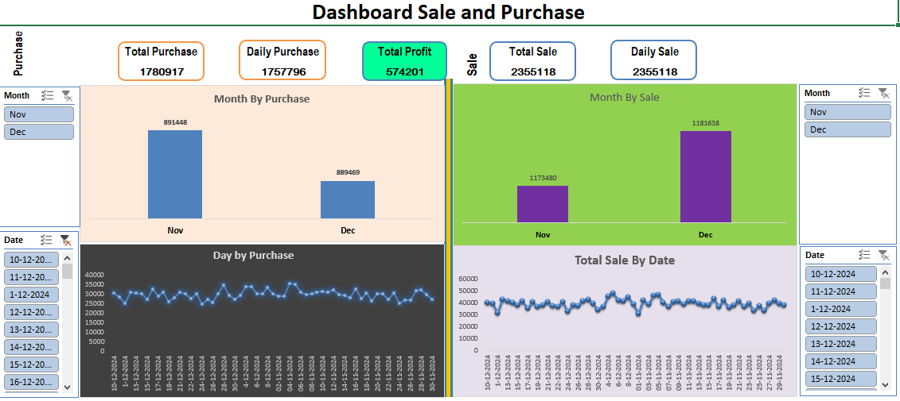
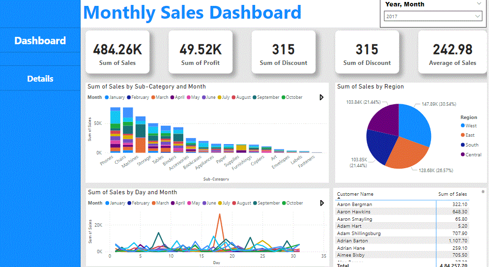

Power BI
dashboards
Bring key business information together in interactive, easy-to-explore reports.
- Sales & purchase insights
- Category and regional analysis
- Business KPI visualization
I’m Sunil Kumar Kashyap, an MIS professional with 3 years of experience. I turn business data into clear reports and interactive dashboards using Advanced Excel and Power BI — with a focus on data analyst opportunities.
Uttar Pradesh, India
Explore the business questions, analytical approach and reporting features behind my work. Start with the Power BI dashboards.
Focused support for business reporting, dashboard design and digital experiences.
Bring key business information together in interactive, easy-to-explore reports.
Organize operational data into structured reports that support daily decisions.
Make patterns easier to understand with purposeful analysis and clear presentation.
Build responsive interfaces with a focus on usability and practical functionality.
MIS Executive with 3 years of experience.
Focused on analytics, dashboards and clear business reporting.
MIS Executive with 3 years of experience, focused on business reporting and data analysis. Skilled in Advanced Excel and Power BI, with a portfolio covering sales, purchases, retail performance and margin analysis.
I turn business information into clear reports and interactive dashboards that help users explore trends and compare performance. I am seeking a Data Analyst or Reporting Analyst role where I can combine my MIS experience with analytical thinking and clear communication.
Building on 3 years in MIS to pursue opportunities in data analysis, reporting and business intelligence.
My MIS background informs how I approach reporting: understand the question, organize the information, and present a clear view of performance. I am looking to apply this experience in a Data Analyst or Reporting Analyst role.
Business information organized into clear summaries and dashboard views.
Power BI projects covering sales, purchases, retail trends, regions and categories.
Interpreting performance, comparing trends and making data easier to explore.
Web development knowledge that supports responsive, user-friendly presentation.

An online tools converter built using HTML and Tailwind CSS, with AI-assisted enhancements.
Open project ↗
I have successfully developed a user interface for a website similar to SarkariResult.com, utilizing HTML and Tailwind CSS. This project demonstrates my proficiency in web development and modern design principles. The UI is designed to be clean, responsive, and user-friendly, ensuring an intuitive experience for users searching for government exam results and related information.
Open project ↗
I have developed a comprehensive suite of online tools, including an Image Resizer, PDF Compressor, PDF Merger, Image Converter, and PDF to JPG Converter, using HTML and Tailwind CSS with the assistance of AI. This project showcases my ability to create user-friendly and efficient web applications that cater to a wide range of document and image processing needs.
Open project ↗
Explore sales and margin insights with filters to focus on the information that matters.
Open project ↗

Select a preview to open the original project image.
Select a preview to open the original project image.


Category-wise and region-wise sales and purchase insights.
View full image ↗
Monthly sales trends, category summaries and regional performance.
View full image ↗A blend of business reporting and development skills, chosen to suit each project.
Hiring for data analysis, MIS or reporting? Share the role, the skills you need and the business problems your team works on. I would welcome a conversation.